¿Vamos bien?
Cómo saber si tu proyecto tiene buen rumbo


¿Seguimos?
↓
¿Y si la otra idea era mejor?
↓
¿Llegamos?
↓
¿Qué hacemos ahora?
↓
¿Seguimos construyendo hacia el mismo destino?
Está buenísimo tener grandes ideas
Solo no nos olvidemos de mirar la realidad
¿Estamos resolviendo un problema real?
¿Estamos aprendiendo algo nuevo?
¿Estamos construyendo algo demostrable?
Vamos bien si
Cada decisión simplifica
↓
Las decisiones apuntan al mismo objetivo
↓
La demo es clara
↓
Explicamos el proyecto en un minuto
¿Vamos bien?
Aparecen ideas constantemente
↓
Cambiamos de rumbo en cada conversación
↓
La explicación deja de ser clara
↓
Todo queda para cuando haya tiempo
¿A dónde íbamos?
Ya no recordamos por qué empezamos
↓
Cada decisión apunta a un lugar distinto
↓
La demo necesita demasiadas explicaciones
↓
Estamos resolviendo problemas que nadie nos pidió
Claridad antes que perfección
En caso de duda
Simplifica
↓
Haz una encuesta
↓
Vuelve al problema
¿Logró validar?
¿En qué tenemos que concentrarnos?
¿Qué tenemos que soltar?
¿La demo cumple la promesa que hacemos?
Éxitos en el Demo Day
GRACIAS